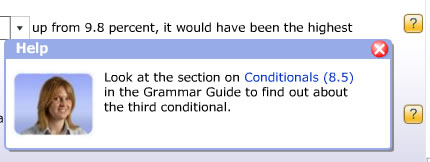

You can do each exercise in either Practice or Test Mode.
Practice mode exercises have 'Hint' buttons. Click on the Hint button to see helpful information about the question. Sometimes the hint will refer you to another part of the Longman Exams Coach.

In Test mode you will get feedback on the questions you get wrong.